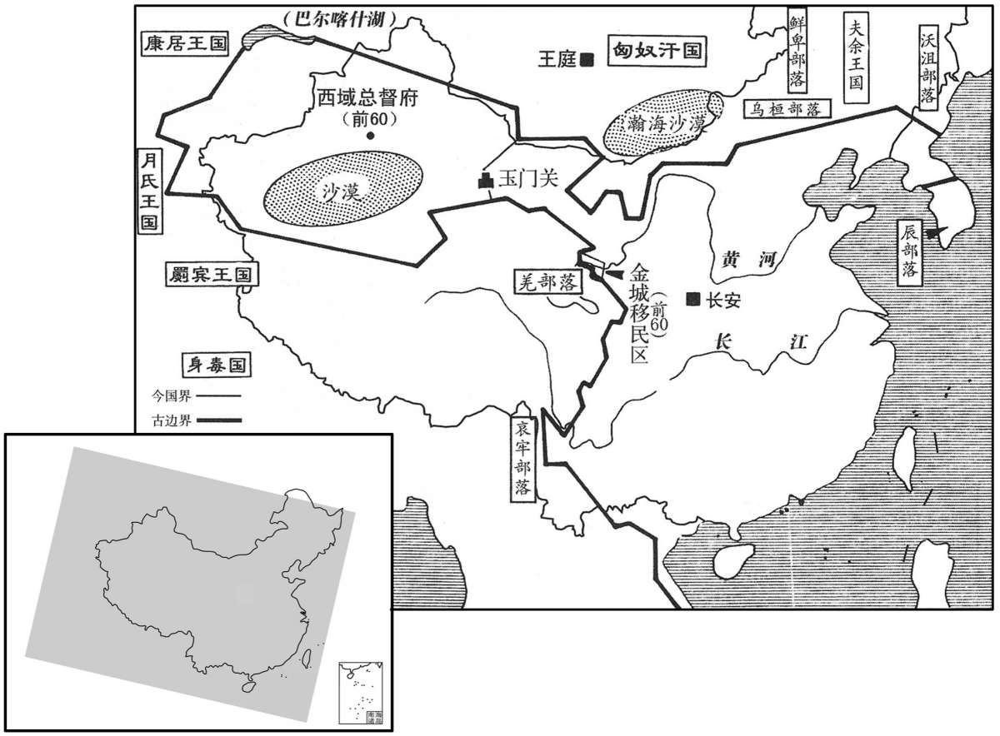

公元40年资治通鉴：本年记事、原文与白话对照
按原书编年位置阅读；追叙和史论不等于本年发生的事件。白话采用所据译本，缺译不以生成译文补齐。
卷43 · 本年记事
公元40年 · 汉世祖光武皇帝建武十六年
十六年〔（庚子、四○）〕
上传原文的注释括号有异常，字符原样保留；无法可靠划分的段落默认全文显示。

本年形势与背景参考图

本年形势与背景参考图

本年形势与背景参考图
春，二月，征侧与甚未征贰反，九真、日南、合浦蛮俚皆应之，〔郡国志：日南郡，秦象郡地，在雒阳南万三千四百里。贤曰：俚，蛮之别号，今呼为俚人。未白曰：爱州，汉九真郡，治胥浦县。驩州，汉日南郡，治朱吾县。〕凡略六十五城，自立为王，都麊泠。交趾刺史及诸太守仅得自守。
春季，二月，征侧和她的妹妹征贰反叛。九真、日南，合浦的蛮人全都起来响应，共攻占六十五个城。征侧自立为王，建都泠。交趾郡刺史和各郡太守仅能自守。
三月，辛丑晦，日有食之。
三月，辛丑晦（三十日），出现日食。
秋，九月，河南尹张伋及诸郡守十余人皆坐度田不实，下狱死。后上从容谓虎贲中郎将马援曰：〔武帝置期门郎，掌执兵送从；平帝元始元年，更名虎贲郎，置中郎将。汉仪：虎贲骑，鹖冠，虎文单衣。度，徒洛翻。从，千容翻。贲，章奔。〕「吾甚恨前杀守、相多也！」〔守，式又翻。相，息亮翻。〕对曰：「死得其罪，何多之有！但死者既往，不可复生也！」〔复，扶又翻。〕上大笑。
秋季，九月，河南尹张和各郡太守十余人，都因丈量土地中作弊，被逮捕入狱处死。后来，刘秀语气和缓地对虎贲中郎将马援说：“我十分悔恨先前杀了很多太守和相。”马援回答说：“他们的死和罪过相当，有什么多不
多呢？只是已经死了的人，不能再复生了。”刘秀大笑。
郡国群盗处处并起，郡县追讨，到则解散，去复屯结，青、徐、幽、冀四州尤甚。冬十月，遣使者下郡国，〔下，遐稼翻。〕听群盗自相纠擿，〔贤曰：擿，犹发也，他狄翻。〕五人共斩一人者，除其罪；吏虽逗留回避故纵者，皆勿问，听以禽讨为效。其牧守令长坐界内有盗贼而不收捕者，又以畏譩捐城委守者，皆不以为负，贤曰：委守，谓弃其所守也。负，罪负心。譩，而恋翻，又奴乱翻。〕但取获贼多少为殿最，〔殿，丁甸翻。〕唯蔽匿者乃罪之。于是更相追捕，〔更，工衡翻。〕贼并解散，徙其魁帅于他郡，赋田受禀，〔禀，给也。帅，所类翻。〕使安生业。自是牛马放牧不收，邑门不闭。
各郡、封国的盗贼处处并起，郡县追击征剿，军队到时盗贼就散开，军队离开后又重新屯聚集结，青州、徐州、幽州、冀州四个州尤其厉害。冬季，十月，朝廷派使节到各郡、封国，听凭盗贼们自相检举攻击。五个人共同斩杀一个人，免除五个人的罪。即使官吏畏怯逗留、逃避、故意放纵盗贼，也一律不追究，允许以擒贼讨贼立功。州、郡太守、县令县长在所辖界内有盗贼而不拘捕，或因畏惧懦弱弃城放弃职责的，全都不予处罚，只看捕获盗贼的多少来排列先后名次。仅对窝藏盗贼的人才加罪。于是，大捕盗贼，盗贼全部解散。把他们的头领迁徙到其他郡，给他们土地，供应粮食，使他们安心生产。从此以后，放牧的牛马晚上不用牵回，城门夜间不用关闭，一片升平景象。
卢芳与闵堪使使请降，帝立芳为代王，堪为代相，赐缯二万匹，〔缯，慈陵翻。〕因使和集匈奴。芳上疏谢，自陈思望阙庭；诏报芳朝明年正月。〔朝，直遥翻；下同。〕
卢芳和闵堪派使者请求投降。刘秀封卢芳为代王，任命闵堪当代相，赏赐绸缎二万匹，让他为朝廷安抚匈奴，建立和睦的关系。卢芳上书谢恩，并说自己思念想往朝廷。刘秀下诏回答卢芳，让他明年正月来朝见。
初，匈奴闻汉购求芳，贪得财帛，故遣芳还降。既而芳以自归为功，不称匈奴所遣，单于复耻言其计，〔复，扶又翻；下同。〕故赏遂不行。由是大恨，入寇尤深。
起初，匈奴听说汉朝悬赏捉拿卢芳，因贪图得到财帛，所以送回卢芳让他投降。后来卢芳以自动归附为功，不说是匈奴所遣，匈奴单于也耻于提到当初的谋划，因而汉朝没有进行赏赐。匈奴从此大为愤恨，入境侵扰得更厉害。
马援奏，宜如旧铸五铢钱，〔废五铢钱事见三十七卷王莽始建国元年。〕上从之；天下赖其便。
马援上奏建议，应当按旧币制铸造五铢钱。刘秀赞同。百姓都因这一措施而感到方便。
译本中未与胡注本可靠对应的内容
以下另列供核对版本差异，不并入胡注本正文。
译本所附古文
[7]卢芳入朝，南及昌平，有诏止，令更朝明岁。
译本白话
卢芳入朝，南下到达昌平。刘秀下诏命他停止，改为明年朝见。